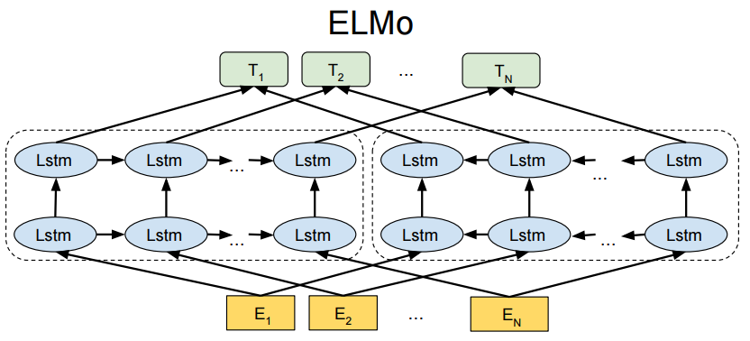
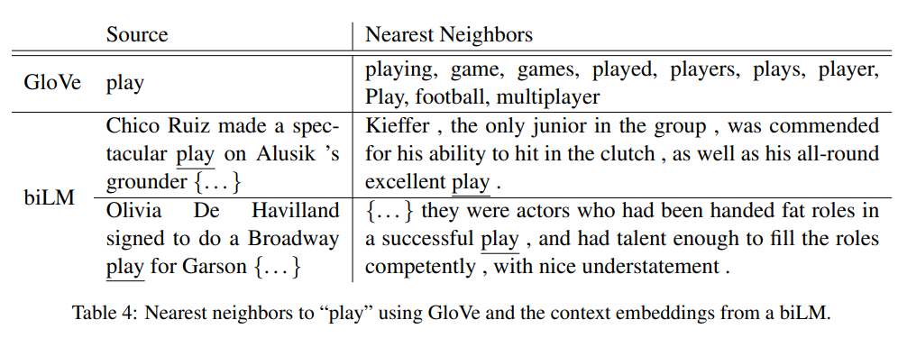

论文精读 ELMo
- 论文名称：Embeddings from Language Models
- 论文地址：1802.05365.pdf (arxiv.org)
1.ELMo简介
ELMo是2018年3月由华盛顿大学提出的一种预训练模型。
ELMo模型提出的动机源于研究人员认为一个好的预训练语言模型应该能够包含丰富的句法和语义信息， 并且能够对多义词进行建模。 而传统的词向量(2013年的word2vec, 2014年的GloVe)都是上下文无关的，也就是固定的词向量。最典型的例子就是”apple”在不同的语境下, 应该可以表示水果或公司，但是固定的词向量显然无法做到这一点。 因为研究团队利用新的语言模型训练一个上下文相关的预训练模型， 成为ELMo， 并在6个NLP任务上获得提升。
2.ELMo架构
2.1 总体架构

从上面的架构图中可以看到， 宏观上ELMo分三个主要模块。
- 最底层黄色标记的Embedding模块。
- 中间层蓝色标记的两部分双层LSTM模块。
- 最上层绿色标记的词向量表征模块。
2.2 Embedding模块
ELMo最底层的词嵌入采用CNN对字符级进行编码，本质就是获得一个静态的词嵌入向量作为网络的底层输入。
2.3 两部分的双层LSTM模块
这是整个ELMo中最重要的部分, 架构中分成左侧的前向LSTM网络， 和右侧的反向LSTM网络。
ELMo的做法是我们只预训练一个Language Model， 而word embedding是通过输入的句子实时给出的，这样单词的嵌入向量就包含了上下文的信息，也就彻底改变了Word2Vec和GloVe的静态词向量的做法.
ELMo的这一模块分为左右两部分, 本质上就是一个双向LM, 对于左半部分, 给定了N个tokens(t1, t2, …, tN), Language Model通过前面k-1个位置的token序列来计算第k个token出现的概率, 构成前向双层LSTM模型.
同理, 对于架构中的右半部分, 给定了N个tokens(t(k+1), t(k+2), …, t(N)), Language Model通过后面N-k个位置的token序列来计算第k个token出现的概率, 构成后向双层LSTM模型.
ELMo在训练过程中的目标函数就是最大化下面的公式:
2.4 词向量表征模块
因为ELMo是个语言模型, 对于每个token, 通过一个L层的双向LSTM网络可以计算出2L+1个表示向量如下:
- 从上面的公式可以清楚的看到, 有3个不同的组成部分, 第一个就是对token直接进行CNN编码的结果, 也是ELMo最底层模块的输出；第二个就是前向LSTM的输出结果, 每一层都会有一个输出， 总共L层就会有L个输出； 第三个就是后向LSTM的输出结果, 每一层都会有一个输出, 总共L层就会有L个输出；综合三部分的输出加在一起, 就是
2L+1个输出向量.
通过整个网络, 每一个token得到了2L+1个表示向量，但是我们希望每一个token能对应一个向量。最简单的做法就是取最上层的输出结果作为token的表示向量，更通用的做法是加入若干参数来融合所有层的信息， 如下所示:
- 上式的意思是对于2L+1个向量，每一个前面都加上一个权重稀疏，然后直接融合成一个向量，最后再乘一个系数作为最终该token的词向量。
- 原始论文中提到最前面的那个系数，在不同任务中取不同的值效果会有较大的差异， 需要注意在SQuAD中设置为0.01取得的效果要好于设置为1。
- 原始论文中在进行底层token编码时，用CNN形成了一个512维的列向量，也就是初始嵌入维度等于512。 中间层使用了双层的LSTM分别进行前向编码和后向编码，每层的单个LSTM输入维度是512，输出维度也是512，保持一致。因为是双向编码并且分左右两部分，所以每层的输出维度是512*2=1024，最后进行权重融合后的向量维度就是1024。
3.ELMo预训练任务
3.1 ELMo的本质思想
首先用一个语言模型学好一个单词的word embedding， 此时是无法区分多义词的，但没关系。当实际使用word embedding的时候，该单词已经具备了特定的上下文信息，这个时候可以根据上下文单词的语义去调整单词的word embedding表示，这样经过调整后得到的word embedding向量就可以准确的表达单词在当前上下文中的真实含义了，也就自然的解决了多义词问题.
结论就是ELMo模型是个根据当前上下文对word embedding动态调整的语言模型。
3.2 ELMo的预训练
ELMo的预训练采用了典型的两阶段过程。
- 第一阶段：利用语言模型进行预训练。
- 第二阶段：在做下游任务时, 从预训练网络中提取对应单词的网络各层的word embedding作为新特征补充到下游任务中。
（1）第一阶段: 语言模型预训练
再次回到ELMo的总体架构图, 网络结构采用了双层双向LSTM.
目前语言模型训练的任务目标是根据单词Wi的上下文去正确预测单词Wi，Wi之前的单词序列context-before称为上文，Wi之后的单词序列context-after称为下文。
架构图上左侧的前向双层LSTM代表正方向编码器, 输入的是从左向右顺序的除了预测单词Wi之外的上文context-before；右侧的反向双层LSTM代表反方向编码器, 输入的是从右向左的逆序的下文context-after；
每个编码器的深度都是L=2, 即双层LSTM叠加.
使用上述的网络结构利用大量语料做语言模型任务就能预训练好这个网络。当输入一个新句子S_new时, 句子中每个单词都能得到对应的3个embedding向量：
- 1-最底层的单词的word embedding。
- 2-中间第一层双向LSTM中对应单词位置的embedding，这层编码对应单词的句法信息更多一些。
- 3-中间第二层双向LSTM中对应单词位置的embedding，这层编码对应单词的语义信息更多一些。
ELMo的预训练过程不仅仅学会了单词的word embedding，还学习了一个双层双向的LSTM网络， 这两者后续都会用到，是整个ELMo预训练的两大产出结果。
（2）第二阶段: 下游任务的调整
比如我们的下游任务是QA问题.
对于问句X, 可以先将句子X作为预训练好的ELMo网络的输入, 这样X中每个单词在ELMo中都能获得3个对应的embedding向量。之后赋给这3个向量各自一个权重a，这个权重a既可以是学习得来的也可以是最简单的平均分布赋值，然后把3个向量加权求和，整个成一个词向量。最后将整合后的词向量作为X在自己任务的那个网络结构中对应单词的输入, 以此作为新特征补充进下游任务中。对于回答Y可以同样处理。
因为ELMo给下游提供的是每个单词的特征形式，所以这一类预训练方法被称为”Feature-based Pre-Training“。
4.ELMo模型的效果
ELMo对于多义词问题的解决结果:

- 前面提到静态的word embedding无法解决多义词的问题, 那么ELMo引入上下文动态语义调整后的embedding word可以解决多义词问题吗? 答案正如上图所示，而且比我们期待的解决效果要更好。
- 上图中的例子，对于GloVe训练出来的word embedding来说，多义词比如play，根据它的embedding找出最接近其语义的单词，发现结果集合几乎全部都在体育领域，这很明显是因为训练数据中包含play的语句中体育领域的数量明显占多数导致的。
- 再来看使用ELMo后的效果，根据上下文动态调整后的embedding word不仅仅能找出对应于”play”:”演出”的相同语义的句子， 而且还可以保证找出的句子中的play对应的词性也是相同的，这真的是超出期待之外的惊喜！
- 原始论文中提到ELMo的试验效果, 在6个NLP主流任务中性能都有不同幅度的提升, 最高的提升达到25%, 任务的覆盖范围很广, 包含句子语义关系判断, 分类任务, 阅读理解等等.
5.ELMo待改进点
ELMo在传统静态word embedding方法（Word2Vec, GloVe）的基础上提升了很多, 但是依然存在缺陷, 有很大的改进余地.
- 第一点：一个很明显的缺点在于特征提取器的选择上， ELMo使用了双向双层LSTM，而不是现在横扫千军的Transformer，在特征提取能力上肯定是要弱一些的。设想如果ELMo的提升提取器选用Transformer，那么后来的BERT的反响将远不如当时那么火爆了。
- 第二点：ELMo选用双向拼接的方式进行特征融合，这种方法肯定不如BERT一体化的双向提取特征好.
6.小结
学习了什么是ELMo.
- ELMo是2018年3月由华盛顿大学提出的一种预训练语言模型.
- ELMo在6种NLP测试任务中有很大的提升表现.
学习了ELMo的结构.
- ELMo架构总体上采用了双向双层LSTM的结构.
- 最底层的Embedding模块.
- 中间层的双向双层LSTM模块.
- 最上层的特征融合模块.
学习了ELMo的预训练任务.
- ELMo的本质思想就是根据当前上下文对word embedding进行动态调整的语言模型.
- ELMo的预训练是一个明显的两阶段过程.
- 第一阶段: 利用语言模型进行预训练, 得到基础静态词向量和双向双层LSTM网络.
- 第二阶段: 在拥有上下文的环境中, 将上下文输入双向双层LSTM中, 得到动态调整后的word embedding, 等于将单词融合进了上下文的语义, 可以更准确的表达单词的真实含义.
学习了ELMo的效果.
- 经过与GloVe静态词向量的对比, 明显可以看出ELMo的词向量可以更好的表达真实语义, 更好的解决多义词的问题.
学习了ELMo的待改进点.
- ELMo的特征提取器没有选用更强大的Transformer, 在提取特征上肯定弱于现在的最优结果.